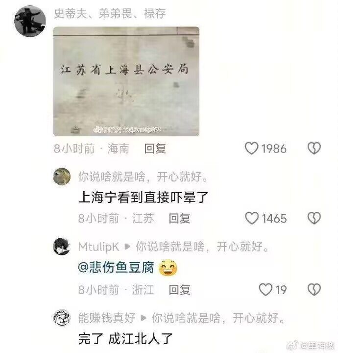

怎么会这样？我应该是上海户口的人，在上海上私立高中，父母长期海外工作。早上有妹妹爬在床边叫我起床吃他亲手做的早饭，出门有可爱的青梅竹马同级生等着我去上学。班里新来的大小姐转校生，是我的同桌的，在课上给我递小纸条，傲娇的巨茹风纪委员红着脸给我整理领带，保健系的美女老师会一脸坏笑的问我恋爱情况。放学后会有可爱的后辈学妹在只有幽灵社员的部系等我，一脸开心的叫我前辈，无表情的学生会长学姐以检查部系的名义靠近我嘴角微笑。放学后隔壁女校的辣妹热情在校门口等我去唱卡拉OK，然后和身旁的青梅竹马同级生争风吃醋。晚上洗澡撞见正在浴室穿衣服的妹妹，夜里喝的烂醉的社会人姐姐到床上抱着我说嫁不出去要和我过一辈子，难道这都是我的幻想吗？
